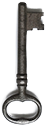
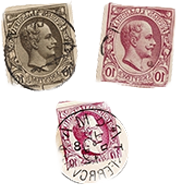
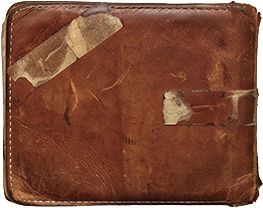
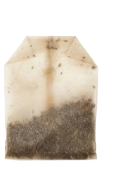

Interactive Grid
for (let x = 0; x <= cols; x++) {
for (let y = 0; y <= rows; y++) {
let px = x * spacing;
let py = y * spacing;
// Distance from circle to mouse
let d = dist(mouseX, mouseY,
px, py);
// Closer = larger diameter
let size = map(d, 0, 250,
28, 4, true);
// Blue close-up,
// parchment far away
let col = lerpColor(
color('#2274A5'),
color('#E7DFC6'),
map(d, 0, 250, 0, 1, true)
);
fill(col);
noStroke();
ellipse(px, py, size, size);
}
}

Une grille de cercles qui réagissent à la position de la souris en temps réel. L'effet crée une sorte de « loupe » qui suit le curseur.
Pour chaque cercle, on calcule la distance (dist()) entre sa position et la souris. Cette distance contrôle deux choses :
La taille : map(d, 0, 250, 28, 4) — plus la souris est proche, plus le cercle est gros (jusqu'à 28px). Loin, il rétrécit à 4px.
La couleur : lerpColor() interpole entre bleu (#2274A5) pour les cercles proches et parchemin (#E7DFC6) pour les cercles éloignés.
Le paramètre true dans map() clamp les valeurs pour éviter qu'elles dépassent les bornes.